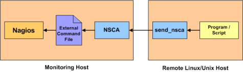
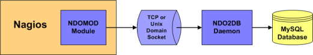

Up To: Contents
Up To: Contents
Introduction
There are a lot of "addon" software packages that are available for Nagios. Addons can be used to extend Nagios' functionality or integrate Nagios with other applications.
Addons are available for:
You can find many addons for Nagios by visiting:
I'll give a brief introduction to a few of the addons that I've developed for Nagios...
NRPE

NRPE is an addon that allows you to execute plugins on remote Linux/Unix hosts. This is useful if you need to monitor local resources/attributes like disk usage, CPU load, memory usage, etc. on a remote host. Similiar functionality can be accomplished by using the check_by_ssh plugin, although it can impose a higher CPU load on the monitoring machine - especially if you are monitoring hundreds or thousands of hosts.
The NRPE addon and documentation can be found at http://www.nagios.org/.
NSCA

NSCA is an addon that allows you to send passive check results from remote Linux/Unix hosts to the Nagios daemon running on the monitoring server. This is very useful in distributed and redundant/failover monitoring setups.
The NSCA addon can be found at http://www.nagios.org/.
NDOUtils

NDOUtils is an addon that allows you to store all status information from Nagios in a MySQL database. Multiple instances of Nagios can all store their information in a central database for centralized reporting. This will likely serve as the basis for a new PHP-based web interface for Nagios in the future.
The NDOUtils addon and documentation can be found at http://www.nagios.org/.
Nagios Exchange - Hundreds of Other Addons

Hundreds of community-developed Nagios addons can be found on the Nagios Exchange website at exchange.nagios.org.